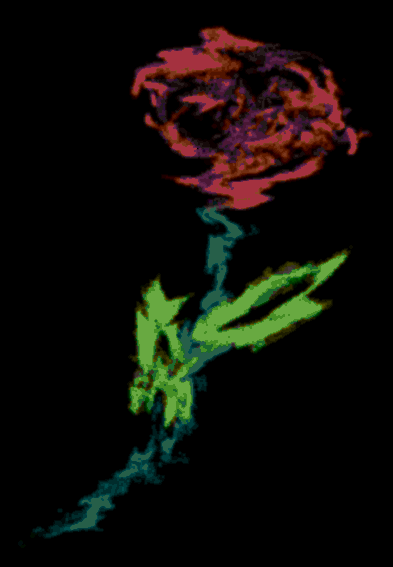

|
Interview with Macabre

31.08.2017
Hey Zed! Are you ready for this interview?
Yess, perfectly ready, let's rock! 1. You have made 2 games, how does it feel? Any interesting experience you want to share? A lot of things happened during this year, my discovery of Kubusian and Jinx's works finally led me to a community of creative people. I feel like I gained more appreciation for the true, independent art, and even though several scandalous events happened, that made me leave Jinx's forums, I still consider myself a part of the wonderful world of good stuff! I've never created games before, but I actually searched for some game-making tools, and stumbled upon OHRRPGCE just before joining Jinx's forums in March (or which month was that? I forgot...). But I actually got into making games thanks to your encouragement, and began my work on "My Head Hurts Like a Bitch". Making games feels awesome! Free, easy, yet versatile programs like TGF can really open up the creative potential of a person, I truly believe that - and coupled with independent spirit and inspiration from Kubus, you can create gold out of dirt and snot, even if some still think it IS dirt and snot. Unfortunately, OHRRPGCE turned out to be a tool which is still being developed, and has some bugs, like random crashes. It is sad that underground gamemakers depend so much on the choice of right programs... I think it's a big problem. So, I've lost a good deal of courage because of the bugs, and the development stopped. Back then I already knew a little about the Glorious Trainwrecks site, which is nothing I've ever seen before. The place supports and encourages the true art in the form of computer games! You told me about an event there, and I decided to give it a try... I had to learn TGF quickly, and it turned out to be very simple to use! The French programs like TGF and Klik are genuinely beneficial to the creative potential, they aren't focused on marketing schemes or boring rationalized programming. A true gift for the artists! Though I'm more inclined to the art of writing, I find myself strangely between the world of philology/philosophy and the world of computers... I try to make that into my individuality. So... ahem... back to the game. Before the event, I already had an idea about creating a game about hallucinogenic cacti. It was to be a game with a light-hearted, adventurous atmosphere. I think I achieved that, judging from the comments my Peyote Runner received on GT. I received inspiration mainly from the film "Fear and Loathing in Las Vegas", of course, which is one of my favourites. I support many views of Hunter Thompson on journalistics and perceiving life in general. I met several technical difficulties, but together with some users we made the game playable. Then, I had a pretty lengthy hiatus, which brought about many strange events, but none of them made me finish the work on my second (actually, first) game, My Head Hurts Like a Bitch (also known as "the sauna game"). The game is darker than Peyote Runner, obviously, but it is also more contemplative and is more narrative-like. It's a story of a single thought on saunas, and my views on it. I think that saunas (meaning mainly Russian Banyas) are a kind of "forced pain" we have to go through, the needless excess of heat from it really gives me strong headache. I tried to find the answer on how the pain could be used, and how to accept it in me without sacrificing anything - i.e. not "enduring" it, but making it a part of me, find something hidden in it, something real, and not illusionary. That's what it's about, and I think people got it, when it was finished in late August despite my severance from Sunfish community (which is now complete, though I still wish the forums well and respect many of its members I got to know during my time there). Sadly, I had to ignore the unfixable bug which caused crashes, and it probably still scares people away from trying the game... I hope the positive comments will make people interested in it, this game means a lot to me. Regarding my future in game-making, I hope to make more games soon - though probably not in OHRRPGCE, likely in TGF, since the former with its crashes would make longer games (which I plan to make) too annoying to play, and I do not aim for that. You can include somewhere after the interview my views on art and game-making in general which I wrote once in response to yours, this will make people more familiar with my philosophy, hopefully. My creative spirit grows stronger with each game made, and I can feel it. I wish all of you who make strange little free games the same!  Peyote Runner
2. you said that you've got some inspiration from Fear and Loathing In Las Vegas for Peyote Runner, but has anything else inspired you? Any games, music, movies? Yes, while Fear and Loathing was the main inspiration, I also used the mood of another movie about H. Thompson, called "Where the Buffalo Roam". There are no elements from that movie in the game per se, but the mood is there. Especially the last part, where the Weird Monster finally reaches his home - it is inspired by the lines "Oh give me a home, where the buffalo roam... where seldom is heard a discouraging word and the skies are not cloudy all day". Also, maybe an obscure Japanese movie "The Insects Unlisted in the Encyclopedia". I'm aslo interested in psychedelic culture in general, I've read some books about peyote cacti, and plan to read more. From music, you can probably guess it's psytrance, mainly 1200 Micrograms, and the song "Mescaline" in their first (and best!) eponymous album. The Daggerfall music in the end was an odd choice, it is used mainly because it's a "lost track" which wasn't even used in the original game, despite being quite cool (and having themes of travels, adventure and possibly "wisdom" of sorts), in my opinion... now it finally found some use in my game!  Fear and loathing in las vegas
3. Do you think you will make more games in the upcoming years? I have some ideas on a few games already, and though I'm not nearly as prolific as Kubus or other game artists out there, the inspiration does visit me at times. I'd say, expect some games with more weird gameplay and probably longer levels in the future! I lack the experience with game-making programs, so I need to experiment a lot. But I do not worry about lack of ideas, I think they come quite easily to my grasp. 4. What's your favorite juice taste? Cherry! No, not because it looks like blood, not at all... hehehe...  Blood?
5. What game do you hate the most? Any highly militaristic games, sport simulators, anything with lots of insults towards players, any MMORPGs and also probably any online FPS. I feel very uneasy about games which have subtle political message or try to become a media-virus. 6. What's youre favorite Kubus movie? All of them are the best movies I've ever seen, plus I heard there's one which is not yet discovered. But I do have an absolute favourite among them! It's "Rats for Dinner"! I really liked the scene where Amund is mixing something sinister out of strange ingredients... Reminds me of one of my bad childhood habits!  7. Would you rather know everything about universe but be a giant, or be a dwarf, but a very dumb one Interesting... a dumb dwarf may be very inconspicuous, and have an easy life, where no one bothers him... While wise giant is absolutely cool and seems like an obvious choice, he might be the target of envy and hate... Still, I think I'd choose the giant anyway! 8. If a bird doesn't see the future, did the microwave explode? I don't use microwaves, so you'd better ask a woodlouse. 9. Whats your catchphrase? I still haven't invented it... 10. Final words? I'll tell you a secret: true optimists do cry a lot, and this is exactly because they treasure happiness above everything else. Thank you Macabre!
As a bonus, today, we have Macabre's views on game creation: MACABRE'S GAME CREATIION RULES My morals regarding all creative works usually are: 1. Trying to make the work absolutely free, and useful to somebody - note that useful doesn't necessarily mean it must provide super-enlightenment or be "socially useful" - bleh! - no, not like that, more like about bringing good mood and evoking interesting emotions, thoughts. Not pure dumb relaxation or entertainment, usually - more like the "healing" effect on soul, to feel better during depression. Sometimes it's okey to make something that satisfies the need for relaxation or knowledge, too. 2. Avoid trying to look like a super smart-ass by offering boring or overly agressive riddles and challenges. I'm more comfortable with "indifferent" approach of Kubus, where you CAN make your game (or some other work of art) hard to understand and play, but you make it silently, and don't make a statement like "if you don't know how to play it you're stupid by default" or "for elite people only". The hardness should be natural, and should come from your heart. If you have some complicated feelings you can put them into the game in form of a riddle/difficult gameplay as a sort of psychotherapy. I think this is what Kubus was trying to do. 3. Never buying that "be original" crap. It's very silly. Do what you want! - said Kubus. And he was damn right. If I want to make it a bit repetitive and boring, nothing should stop me. It might turn out to be quite original in the end. Again, if it comes truly from your heart, it will ALWAYS be original. I hate when people make a race for seeking things that are "fun" and "original". Like when they see something that doesn't make them laugh their ass off or jizz in their pants on sight, they say it's "boring" and "unfunny". Very dumb approach to art. The whole mainstream industry of entertainment (like games) is based on that. And most of it is utterly boring shit. Why does it happen? Because they always pursue that "be original" idea, while forgetting about the idea itself. They search for the same "fun" shit over and over, they don't understand that they are actually making no progress. While a guy like Kubus creates 100+ free games with crude graphics and simple gameplay - it may seem like he is not making any progress, just repeating his ideas (like with endless Johnny games), but the guy actually EXPLORES the idea, and even out of single idea he manages to squeeze out a lot of stuff! And it was TRULY fun, and TRULY original. He is not afraid to take his time, to release things when he wants. When he is ready, he moves on to try new idea. I support your rule about taking long breaks. Taking your time sounds very good! 4. I don't have many "technical" rules, but I personally stick to using free game-making programs, trying not to show off my game-making skills - if I learn some new tricks, I'd rather use them when they are really needed rather than putting them everywhere (though it may be fun sometimes, and if it's for fun, and not just for showing off). Copying ideas is bad, but getting inspired by things is okey. Especially if you're inspired by some weird things - not necessarily someone's weird games, but also films and the like. Hell, even being inspired by a rotten leaf on the road is good! You get inspired by the works of Mother Nature herself!! I'm not afraid to use "copyrighted" stuff, because nowadays people try to make copyright even trees, air, land and water, which are nobody's but mother nature's. Using some things like random pics and musics and mixing them into a nice pile of trash is great, I think, and nobody should be offended by that - except if they are overly greedy and malevolent. Of corpse simply copying and not using it as a material for something else is something I'd rather avoid - not much because it's someone else's but more because it's simply counter-creative. Back to Texts |